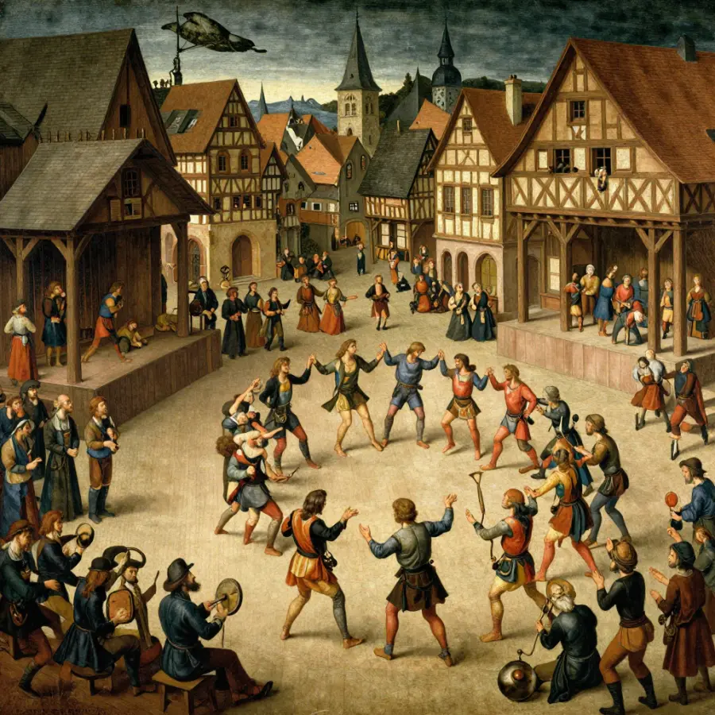

The Dancing Plague: When People Danced to Their Death!

In 1518, the people of Strasbourg couldn't stop dancing - even when they were dying!
Imagine being unable to stop dancing. Your legs are exhausted, your feet are bleeding, and you're begging for it to end - but your body just keeps moving. This actually happened to hundreds of people in 1518. It became known as the Dancing Plague.
For weeks, people in the city of Strasbourg (in modern-day France) danced day and night. Many collapsed from exhaustion. Some danced themselves to death. And to this day, nobody knows exactly why.
Overview
How It Started
It began in July 1518, when a woman named Frau Troffea stepped into the streets of Strasbourg and started dancing. She didn't stop. For six days, she danced without rest.
Then something strange happened: others joined her. Within a week, 34 people were dancing uncontrollably. Within a month, that number grew to 400 dancers!
Dancers collapsed from exhaustion, but many got back up and kept dancing!
💃 The Symptoms Were Terrifying
Victims danced for days without stopping. Their feet bled. Some suffered heart attacks or strokes. When they collapsed from exhaustion, they would twitch and jerk on the ground, still trying to dance!
The Strange "Cure"
Doctors at the time were baffled. They had no idea what was causing the dancing plague. But they came up with a "cure" that sounds crazy today:
Make them dance more!
Doctors believed the dancers had "hot blood" and needed to dance it out of their systems. So they built a wooden stage and hired musicians to play fast music. The idea was that if people danced enough, they would be cured.

Doctors actually hired musicians to make people dance MORE - which only made things worse!
As you might guess, this didn't work. People kept dancing until they collapsed. Some never got back up.
📊 The Death Toll
Historical records suggest that around 15 people per day were dying during the height of the plague. The dancing continued for about two months before finally stopping.
Evidence
Historical work on The Dancing Plague is strongest when primary records, material traces, and later peer-reviewed analysis point in the same direction. This layered approach helps separate observations from retellings and reduces the risk of repeating popular but unsupported claims.
It Happened Before!
The 1518 plague wasn't the first of its kind. Similar dancing outbreaks occurred throughout medieval Europe:
- 🎯 1374 - A dancing plague hit towns along the Rhine River
- 💒 1237 - Children in Erfurt danced until they collapsed
- 🎭 1278 - 200 people danced on a bridge until it collapsed!
Competing Explanations
Competing explanations usually persist because each one fits part of the evidence while missing another part. Researchers test these models against chronology, physical constraints, and independent documentation to identify which interpretation requires the fewest assumptions.
What Caused It?
Historians and scientists have proposed many theories:
🍞 Mold Poisoning: Some think a mold that grows on bread (ergot) caused hallucinations and convulsions. But ergot usually causes gangrene and death much faster - not dancing for weeks.
🧠 Mass Hysteria: The most popular theory today is "mass psychogenic illness" - when extreme stress causes physical symptoms that spread through a community. Strasbourg in 1518 was a stressful place: famine, disease, and religious conflict were everywhere.
🙏 Religious Ecstasy: Some believe people were caught up in a religious frenzy. Medieval people sometimes danced in churches as a form of worship. But the Dancing Plague was much more extreme and destructive.
Open Questions
Open questions remain because source quality is uneven across time: some records are direct and detailed, while others are fragmentary or second-hand. Future archival discoveries, improved imaging, and more precise dating methods may refine conclusions without overturning well-supported core findings.
The Mystery Continues
The Dancing Plague of 1518 remains one of history's strangest events. We have records proving it happened, but we still don't know exactly what caused it or why it stopped.
Was it mass hysteria? Poisoning? Something supernatural? The people of Strasbourg danced their way into history - and into one of its greatest mysteries!
📖 Recommended Reading
Want to learn more? Check out A Time to Dance A Time to Die on Amazon for a deeper dive into this fascinating topic. (As an Amazon Associate, we earn from qualifying purchases.)
References & Further Reading
Editorial note: We cross-check claims across multiple independent sources. See our Editorial Policy.